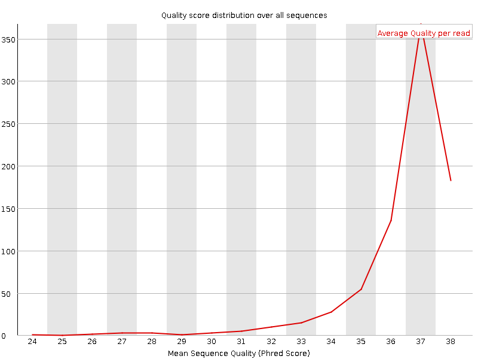
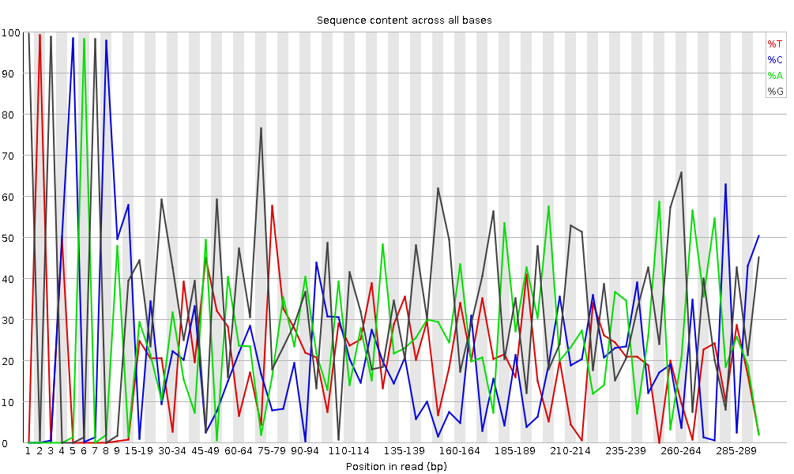
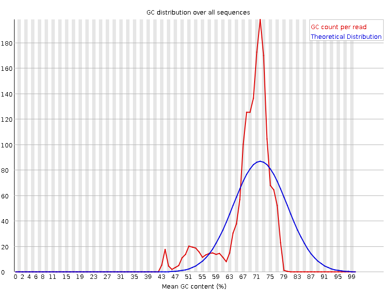

rating Rating:4.3 (6 recent ratings, 184 all time)
version Revision: 41
During sequencing, the nucleotide bases in a DNA or RNA sample (library) are determined by the sequencer. For each fragment in the library, a sequence is generated, also called a read, which is simply a succession of nucleotides.
Modern sequencing technologies can generate a massive number of sequence reads in a single experiment. However, no sequencing technology is perfect, and each instrument will generate different types and amount of errors, such as incorrect nucleotides being called. These wrongly called bases are due to the technical limitations of each sequencing platform.
Therefore, it is necessary to understand, identify and exclude error-types that may impact the interpretation of downstream analysis.
Sequence quality control is therefore an essential first step in your analysis. Catching errors early saves time later on.
Create a new history for this tutorial and give it a proper name
To create a new history simply click the new-history icon at the top of the history panel:
Click on galaxy-pencil (Edit) next to the history name (which by default is “Unnamed history”)
Type the new name
Click on Save
To cancel renaming, click the galaxy-undo “Cancel†button
If you do not have the galaxy-pencil (Edit) next to the history name (which can be the case if you are using an older version of Galaxy) do the following:
Click on Unnamed history (or the current name of the history) (Click to rename history) at the top of your history panel
Type the new name
Press Enter
Import the file female_oral2.fastq-4143.gz from Zenodo or from the data library (ask your instructor)
This is a microbiome sample from a snake Jacques et al. 2021.
Click galaxy-uploadUpload Data at the top of the tool panel
Select galaxy-wf-editPaste/Fetch Data
Paste the link(s) into the text field
Press Start
Close the window
As an alternative to uploading the data from a URL or your computer, the files may also have been made available from a shared data library:
Go into Data (top panel) then Data libraries
Navigate to the correct folder as indicated by your instructor.
On most Galaxies tutorial data will be provided in a folder named GTN - Material –> Topic Name -> Tutorial Name.
Select the desired files
Click on Add to Historygalaxy-dropdown near the top and select as Datasets from the dropdown menu
In the pop-up window, choose
“Select history”: the history you want to import the data to (or create a new one)
Click on Import
Rename the imported dataset to Reads.
We just imported a file into Galaxy. This file is similar to the data we could get directly from a sequencing facility: a FASTQ file.
Hands-on: Inspect the FASTQ file
Inspect the file by clicking on the galaxy-eye (eye) icon
Although it looks complicated (and maybe it is), the FASTQ format is easy to understand with a little decoding.
Each read, representing a fragment of the library, is encoded by 4 lines:
Line
Description
1
Always begins with @ followed by the information about the read
2
The actual nucleic sequence
3
Always begins with a + and contains sometimes the same info in line 1
4
Has a string of characters which represent the quality scores associated with each base of the nucleic sequence; must have the same number of characters as line 2
So for example, the first sequence in our file is:
It means that the fragment named @M00970 corresponds to the DNA sequence GTGCCAGCCGCCGCGGTAGTCCGACGTGGCTGTCTCTTATACACATCTCCGAGCCCACGAGACCGAAGAACATCTCGTATGCCGTCTTCTGCTTGAAAAAAAAAAAAAAAAAAAACAAAAAAAAAAAAAGAAGCAAATGACGATTCAAGAAAGAAAAAAACACAGAATACTAACAATAAGTCATAAACATCATCAACATAAAAAAGGAAATACACTTACAACACATATCAATATCTAAAATAAATGATCAGCACACAACATGACGATTACCACACATGTGTACTACAAGTCAACTA and this sequence has been sequenced with a quality GGGGGGGGGGGGGGGGGGGGGGGGGGGGGGGGGGGGGGGGGGGGGGGGGGGGGGGGGGGGGFGGGFGGGGGGAFFGGFGGGGGGGGFGGGGGGGGGGGGGGFGGG+38+35*311*6,,31=******441+++0+0++0+*1*2++2++0*+*2*02*/***1*+++0+0++38++00++++++++++0+0+2++*+*+*+*+*****+0**+0**+***+)*.***1**//*)***)/)*)))*)))*),)0(((-((((-.(4(,,))).,(())))))).)))))))-))-(.
But what does this quality score mean?
The quality score for each sequence is a string of characters, one for each base of the nucleotide sequence, used to characterize the probability of misidentification of each base. The score is encoded using the ASCII character table (with some historical differences):
To save space, the sequencer records an ASCII character to represent scores 0-42. For example 10 corresponds to “+†and 40 corresponds to “I”. FastQC knows how to translate this. This is often called “Phred†scoring.
So there is an ASCII character associated with each nucleotide, representing its Phred quality score, the probability of an incorrect base call:
Phred Quality Score
Probability of incorrect base call
Base call accuracy
10
1 in 10
90%
20
1 in 100
99%
30
1 in 1000
99.9%
40
1 in 10,000
99.99%
50
1 in 100,000
99.999%
60
1 in 1,000,000
99.9999%
What does 0-42 represent? These numbers, when plugged into a formula, tell us the probability of an error for that base. This is the formula, where Q is our quality score (0-42) and P is the probability of an error:
Q = -10 log10(P)
Using this formula, we can calculate that a quality score of 40 means only 0.00010 probability of an error!
Question
Which ASCII character corresponds to the worst Phred score for Illumina 1.8+?
What is the Phred quality score of the 3rd nucleotide of the 1st sequence?
What is the accuracy of this 3rd nucleotide?
The worst Phred score is the smallest one, so 0. For Illumina 1.8+, it corresponds to the ! character.
The 3rd nucleotide of the 1st sequence has a ASCII character G, which correspond to a score of 38.
The corresponding nucleotide G has an accuracy of almost 99.99%
Comment
The current lllumina (1.8+) uses Sanger format (Phred+33). If you are working with older datasets you may encounter the older scoring schemes. FastQCtool, a tool we will use later in this tutorial, can be used to try to determine what type of quality encoding is used (through assessing the range of Phred values seen in the FASTQ).
When looking at the file in Galaxy, it looks like most the nucleotides have a high score (G corresponding to a score 38). Is it true for all sequences? And along the full sequence length?
Assess quality with FASTQE 🧬😎 - short reads only
To take a look at sequence quality along all sequences, we can use FASTQE. It is an open-source tool that provides a simple and fun way to quality control raw sequence data and print them as emoji. You can use it to give a quick impression of whether your data has any problems of which you should be aware before doing any further analysis.
Hands-on: Quality check
FASTQE ( Galaxy version 0.2.6+galaxy2) with the following parameters
param-files“FastQ data”: Reads
param-select“Score types to show”: Mean
Inspect the generated HTML file
Rather than looking at quality scores for each individual read, FASTQE looks at quality collectively across all reads within a sample and can calculate the mean for each nucleotide position along the length of the reads. Below shows the mean values for this dataset.
You can see the score for each emoji in fastqe’s documentation. The emojis below, with Phred scores less than 20, are the ones we hope we don’t see much.
An additional or alternative way we can check sequence quality is with FastQC. It provides a modular set of analyses which you can use to check whether your data has any problems of which you should be aware before doing any further analysis. We can use it, for example, to assess whether there are known adapters present in the data. We’ll run it on the FASTQ file.
Hands-on: Quality check
FASTQC ( Galaxy version 0.73+galaxy0) with the following parameters
param-files“Raw read data from your current history”: Reads
Inspect the generated HTML file
Question
Which Phred encoding is used in the FASTQ file for these sequences?
The Phred scores are encoded using Sanger / Illumina 1.9 (Encoding in the top table).
Per base sequence quality
With FastQC we can use the per base sequence quality plot to check the base quality of the reads, similar to what we did with FASTQE.
On the x-axis are the base position in the read. In this example, the sample contains reads that are up to 296 bp long.
The x-axis is not always uniform. When you have long reads, some binning is applied to keep things compact. We can see that in our sample. It starts out with individual 1-10 bases. After that, bases are binned across a window a certain number of bases wide. Data binning means grouping and is a data pre-processing technique used to reduce the effects of minor observation errors. The number of base positions binned together depends on the length of the read. With reads >50bp, the latter part of the plot will report aggregate statistics for 5bp windows. Shorter reads will have smaller windows and longer reads larger windows. Binning can be removed when running FastQC by setting the paramter “Disable grouping of bases for reads >50bp†to Yes.
For each position, a boxplot is drawn with:
the median value, represented by the central red line
the inter-quartile range (25-75%), represented by the yellow box
the 10% and 90% values in the upper and lower whiskers
the mean quality, represented by the blue line
The y-axis shows the quality scores. The higher the score, the better the base call. The background of the graph divides the y-axis into very good quality scores (green), scores of reasonable quality (orange), and reads of poor quality (red).
It is normal with all Illumina sequencers for the median quality score to start out lower over the first 5-7 bases and to then rise. The quality of reads on most platforms will drop at the end of the read. This is often due to signal decay or phasing during the sequencing run. The recent developments in chemistry applied to sequencing has improved this somewhat, but reads are now longer than ever.
Signal decay
The fluorescent signal intensity decays with each cycle of the sequencing process. Due to the degrading fluorophores, a proportion of the strands in the cluster are not being elongated. The proportion of the signal being emitted continues to decrease with each cycle, yielding to a decrease of quality scores at the 3’ end of the read.
Phasing
The signal starts to blur with the increase of number of cycles because the cluster looses synchronicity. As the cycles progress, some strands get random failures of nucleotides to incorporate due to:
Incomplete removal of the 3’ terminators and fluorophores
Incorporation of nucleotides without effective 3’ terminators
This leads to a decrease in quality scores at the 3’ end of the read.
These are some per base sequence quality profiles that can indicate issues with the sequencing.
Overclustering
Sequencing facilities can overcluster the flow cells. It results in small distances between clusters and an overlap in the signals. Two clusters can be interpreted as a single cluster with mixed fluorescent signals being detected, decreasing signal purity. It generates lower quality scores across the entire read.
Instrumentation breakdown
Some issues can occasionally happen with the sequencing instruments during a run. Any sudden drop in quality or a large percentage of low quality reads across the read could indicate a problem at the facility. Some examples of such issues:
With such data, the sequencing facility should be contacted for discussion. Often, a resequencing then is needed (and from our experience also offered by the company).
Question
How does the mean quality score change along the sequence?
Is this tendency seen in all sequences?
The mean quality score (blue line) drops about midway though these sequences. It is common for the mean quality to drop towards the end of the sequences, as the sequencers are incorporating more incorrect nucleotides at the end. However, in this sample there is a very large drop in quality from the middle onwards.
The box plots are getting wider from position ~100. It means a lot of sequences have their score dropping from the middle of the sequence. After 100 nucleotides, more than 10% of the sequences have scores below 20.
When the median quality is below a Phred score of ~20, we should consider trimming away bad quality bases from the sequence. We will explain that process in the Trim and filter section.
The plot shows the cumulative percentage of reads with the different adapter sequences at each position. Once an adapter sequence is seen in a read it is counted as being present right through to the end of the read so the percentage increases with the read length. FastQC can detect some adapters by default (e.g. Illumina, Nextera), for others we could provide a contaminants file as an input to the FastQC tool.
Ideally Illumina sequence data should not have any adapter sequence present. But with long reads, some of the library inserts are shorter than the read length resulting in read-through to the adapter at the 3’ end of the read. This microbiome sample has relatively long reads and we can see Nextera dapater has been detected.
Adapter content may also be detected with RNA-Seq libraries where the distribution of library insert sizes is varied and likely to include some short inserts.
We can run an trimming tool such as Cutadapt to remove this adapter. We will explain that process in the filter and trim section.
The following sections go into detail about some of the other plots generated by FastQC. Note that some plots/modules may give warnings but be normal
for the type of data you’re working with, as discussed below and in the FASTQC FAQ.
The other plots give us information to more deeply understand the quality of the data, and to see if changes could be made in the lab to get higher-quality data in the future.
These sections are optional, and if you would like to skip these you can:
Jump straight to the next section to learn about trimming paired-end data
Per tile sequence quality
This plot enables you to look at the quality scores from each tile across all of your bases to see if there was a loss in quality associated with only one part of the flowcell. The plot shows the deviation from the average quality for each flowcell tile. The hotter colours indicate that reads in the given tile have worse qualities for that position than reads in other tiles. With this sample, you can see that certain tiles show consistently poor quality, especially from ~100bp onwards. A good plot should be blue all over.
This plot will only appear for Illumina library which retains its original sequence identifiers. Encoded in these is the flowcell tile from which each read came.
In some cases, the chemicals used during sequencing becoming a bit exhausted over the time and the last tiles got worst chemicals which makes the sequencing reactions a bit error-prone. The “Per tile sequence quality†graph will then have some horizontal lines like this:
Per sequence quality scores
It plots the average quality score over the full length of all reads on the x-axis and gives the total number of reads with this score on the y-axis:
The distribution of average read quality should be tight peak in the upper range of the plot. It can also report if a subset of the sequences have universally low quality values: it can happen because some sequences are poorly imaged (on the edge of the field of view etc), however these should represent only a small percentage of the total sequences.
Figure 6: Per base sequence content for a DNA library
“Per Base Sequence Content†plots the percentage of each of the four nucleotides (T, C, A, G) at each position across all reads in the input sequence file. As for the per base sequence quality, the x-axis is non-uniform.
In a random library we would expect that there would be little to no difference between the four bases. The proportion of each of the four bases should remain relatively constant over the length of the read with %A=%T and %G=%C, and the lines in this plot should run parallel with each other. This is amplicon data, where 16S DNA is PCR amplified and sequenced, so we’d expect this plot to have some bias and not show a random distribution.
It’s worth noting that some library types will always produce biased sequence composition, normally at the start of the read. Libraries produced by priming using random hexamers (including nearly all RNA-Seq libraries), and those which were fragmented using transposases, will contain an intrinsic bias in the positions at which reads start (the first 10-12 bases). This bias does not involve a specific sequence, but instead provides enrichment of a number of different K-mers at the 5’ end of the reads. Whilst this is a true technical bias, it isn’t something which can be corrected by trimming and in most cases doesn’t seem to adversely affect the downstream analysis. It will, however, produce a warning or error in this module.
ChIP-seq data can also encounter read start sequence biases in this plot if fragmenting with transposases. With bisulphite converted data, e.g. HiC data, a separation of G from C and A from T is expected:
At the end, there is an overall shift in the sequence composition. If the shift correlates with a loss of sequencing quality, it can be suspected that miscalls are made with a more even sequence bias than bisulphite converted libraries. Trimming the sequences fixed this problem, but if this hadn’t been done it would have had a dramatic effect on the methylation calls which were made.
Question
Why is there a warning for the per-base sequence content graphs?
In the beginning of sequences, the sequence content per base is not really good and the percentages are not equal, as expected for 16S amplicon data.
This plot displays the number of reads vs. percentage of bases G and C per read. It is compared to a theoretical distribution assuming an uniform GC content for all reads, expected for whole genome shotgun sequencing, where the central peak corresponds to the overall GC content of the underlying genome. Since the GC content of the genome is not known, the modal GC content is calculated from the observed data and used to build a reference distribution.
An unusually-shaped distribution could indicate a contaminated library or some other kind of biased subset. A shifted normal distribution indicates some systematic bias, which is independent of base position. If there is a systematic bias which creates a shifted normal distribution then this won’t be flagged as an error by the module since it doesn’t know what your genome’s GC content should be.
But there are also other situations in which an unusually-shaped distribution may occur. For example, with RNA sequencing there may be a greater or lesser distribution of mean GC content among transcripts causing the observed plot to be wider or narrower than an ideal normal distribution.
Question
Why is there a fail for the per sequence GC content graphs?
There are multiple peaks. This can be indicative of unexpected contamination, such as adapter, rRNA or overrepresented sequences. Or it may be normal if it is amplicon data or you have highly abundant RNA-seq transcripts.
Sequence length distribution
This plot shows the distribution of fragment sizes in the file which was analysed. In many cases this will produce a simple plot showing a peak only at one size, but for variable length FASTQ files this will show the relative amounts of each different size of sequence fragment. Our plot shows variable length as we trimmed the data. The biggest peak is at 296bp but there is a second large peak at ~100bp. So even though our sequences range up to 296bp in length, a lot of the good-quality sequences are shorter. This corresponds with the drop we saw in the sequence quality at ~100bp and the red stripes starting at this position in the per tile sequence quality plot.
Some high-throughput sequencers generate sequence fragments of uniform length, but others can contain reads of widely varying lengths. Even within uniform length libraries some pipelines will trim sequences to remove poor quality base calls from the end or the first \(n\) bases if they match the first \(n\) bases of the adapter up to 90% (by default), with sometimes \(n = 1\).
Sequence Duplication Levels
The graph shows in blue the percentage of reads of a given sequence in the file which are present a given number of times in the file:
In a diverse library most sequences will occur only once in the final set. A low level of duplication may indicate a very high level of coverage of the target sequence, but a high level of duplication is more likely to indicate some kind of enrichment bias.
Two sources of duplicate reads can be found:
PCR duplication in which library fragments have been over-represented due to biased PCR enrichment
It is a concern because PCR duplicates misrepresent the true proportion of sequences in the input.
Truly over-represented sequences such as very abundant transcripts in an RNA-Seq library or in amplicon data (like this sample)
It is an expected case and not of concern because it does faithfully represent the input.
FastQC counts the degree of duplication for every sequence in a library and creates a plot showing the relative number of sequences with different degrees of duplication. There are two lines on the plot:
Blue line: distribution of the duplication levels for the full sequence set
Red line: distribution for the de-duplicated sequences with the proportions of the deduplicated set which come from different duplication levels in the original data.
For whole genome shotgun data it is expected that nearly 100% of your reads will be unique (appearing only 1 time in the sequence data). Most sequences should fall into the far left of the plot in both the red and blue lines. This indicates a highly diverse library that was not over sequenced. If the sequencing depth is extremely high (e.g. > 100x the size of the genome) some inevitable sequence duplication can appear: there are in theory only a finite number of completely unique sequence reads which can be obtained from any given input DNA sample.
More specific enrichments of subsets, or the presence of low complexity contaminants will tend to produce spikes towards the right of the plot. These high duplication peaks will most often appear in the blue trace as they make up a high proportion of the original library, but usually disappear in the red trace as they make up an insignificant proportion of the deduplicated set. If peaks persist in the red trace then this suggests that there are a large number of different highly duplicated sequences which might indicate either a contaminant set or a very severe technical duplication.
It is usually the case for RNA sequencing where there is some very highly abundant transcripts and some lowly abundant. It is expected that duplicate reads will be observed for high abundance transcripts:
Over-represented sequences
A normal high-throughput library will contain a diverse set of sequences, with no individual sequence making up a tiny fraction of the whole. Finding that a single sequence is very over-represented in the set either means that it is highly biologically significant, or indicates that the library is contaminated, or not as diverse as expected.
FastQC lists all of the sequence which make up more than 0.1% of the total. For each over-represented sequence FastQC will look for matches in a database of common contaminants and will report the best hit it finds. Hits must be at least 20bp in length and have no more than 1 mismatch. Finding a hit doesn’t necessarily mean that this is the source of the contamination, but may point you in the right direction. It’s also worth pointing out that many adapter sequences are very similar to each other so you may get a hit reported which isn’t technically correct, but which has a very similar sequence to the actual match.
RNA sequencing data may have some transcripts that are so abundant that they register as over-represented sequence. With DNA sequencing data no single sequence should be present at a high enough frequency to be listed, but we can sometimes see a small percentage of adapter reads.
Question
How could we find out what the overrepreseented sequences are?
We can BLAST overrepresented sequences to see what they are. In this case, if we take the top overrepresented sequence
If a sequencer is unable to make a base call with sufficient confidence, it will write an “N†instead of a conventional base call. This plot displays the percentage of base calls at each position or bin for which an N was called.
It’s not unusual to see a very high proportion of Ns appearing in a sequence, especially near the end of a sequence. But this curve should never rises noticeably above zero. If it does this indicates a problem occurred during the sequencing run. In the example below, an error caused the instrument to be unable to call a base for approximately 20% of the reads at position 29:
This plot not output by default. As stated in the tool form, if you want this module it needs to be enabled using a custom Submodule and limits file. With this module, FastQC does a generic analysis of all of the short nucleotide sequences of length k (kmer, with k = 7 by default) starting at each position along the read in the library to find those which do not have an even coverage through the length of your reads. Any given kmer should be evenly represented across the length of the read.
FastQC will report the list of kmers which appear at specific positions with a greater frequency than expected. This can be due to different sources of bias in the library, including the presence of read-through adapter sequences building up on the end of the sequences. The presence of any overrepresented sequences in the library (such as adapter dimers) causes the kmer plot to be dominated by the kmer from these sequences. Any biased kmer due to other interesting biases may be then diluted and not easy to see.
The following example is from a high-quality DNA-Seq library. The biased kmers nearby the start of the read likely are due to slight sequence dependent efficiency of DNA shearing or a result of random priming:
This module can be very difficult to interpret. The adapter content plot and overrepesented sequences table are easier to interpret and may give you enough information without needing this plot. RNA-seq libraries may have highly represented kmers that are derived from highly expressed sequences. To learn more about this plot, please check the FastQC Kmer Content documentation.
We tried to explain here there different FastQC reports and some use cases. More about this and also some common next-generation sequencing problems can be found on QCFAIL.com
Small/micro RNA
In small RNA libraries, we typically have a relatively small set of unique, short sequences. Small RNA libraries are not randomly sheared before adding sequencing adapters to their ends: all the reads for specific classes of microRNAs will be identical. It will result in:
Extremely biased per base sequence content
Extremely narrow distribution of GC content
Very high sequence duplication levels
Abundance of overrepresented sequences
Read-through into adapters
Amplicon
Amplicon libraries are prepared by PCR amplification of a specific target. For example, the V4 hypervariable region of the bacterial 16S rRNA gene. All reads from this type of library are expected to be nearly identical. It will result in:
Extremely biased per base sequence content
Extremely narrow distribution of GC content
Very high sequence duplication levels
Abundance of overrepresented sequences
Bisulfite or Methylation sequencing
With Bisulfite or methylation sequencing, the majority of the cytosine (C) bases are converted to thymine (T). It will result in:
Biased per base sequence content
Biased per sequence GC content
Adapter dimer contamination
Any library type may contain a very small percentage of adapter dimer (i.e. no insert) fragments. They are more likely to be found in amplicon libraries constructed entirely by PCR (by formation of PCR primer-dimers) than in DNA-Seq or RNA-Seq libraries constructed by adapter ligation. If a sufficient fraction of the library is adapter dimer it will become noticeable in the FastQC report:
Drop in per base sequence quality after base 60
Possible bi-modal distribution of per sequence quality scores
Distinct pattern observed in per bases sequence content up to base 60
Spike in per sequence GC content
Overrepresented sequence matching adapter
Adapter content > 0% starting at base 1
Comment: Bad quality sequences
If the quality of the reads is not good, we should always first check what is wrong and think about it: it may come from the type of sequencing or what we sequenced (high quantity of overrepresented sequences in transcriptomics data, biased percentage of bases in HiC data).
You can also ask the sequencing facility about it, especially if the quality is really bad: the quality treatments can not solve everything. If too many bad quality bases are cut away, the corresponding reads then will be filtered out and you lose them.
Trim and filter - short reads
The quality drops in the middle of these sequences. This could cause bias in downstream analyses with these potentially incorrectly called nucleotides. Sequences must be treated to reduce bias in downstream analysis. Trimming can help to increase the number of reads the aligner or assembler are able to succesfully use, reducing the number of reads that are unmapped or unassembled. In general, quality treatments include:
Trimming/cutting/masking sequences
from low quality score regions
beginning/end of sequence
removing adapters
Filtering of sequences
with low mean quality score
too short
with too many ambiguous (N) bases
To accomplish this task we will use CutadaptMarcel 2011, a tool that enhances sequence quality by automating adapter trimming as well as quality control. We will:
Trim low-quality bases from the ends. Quality trimming is done before any adapter trimming. We will set the quality threshold as 20, a commonly used threshold, see more in GATK’s Phred Score FAQ.
Trim adapter with Cutadapt. For that we need to supply the sequence of the adapter. In this sample, Nextera is the adapter that was detected. We can find the sequence of the Nextera adapter on the Illumina website hereCTGTCTCTTATACACATCT. We will trim that sequence from the 3’ end of the reads.
Filter out sequences with length < 20 after trimming
Hands-on: Improvement of sequence quality
Cutadapt ( Galaxy version 3.4+galaxy2) with the following parameters
“Single-end or Paired-end reads?”: Single-end
param-file“Reads in FASTQ format”: Reads (Input dataset)
If your FASTQ file cannot be selected, you might check whether the format is FASTQ with Sanger-scaled quality values (fastqsanger.gz). You can edit the data type by clicking on the pencil symbol.
What % reads have been trimmed because of bad quality?
What % reads have been removed because they were too short?
56.8% reads contain adapter (Reads with adapters:)
35.1% reads have been trimmed because of bad quality (Quality-trimmed:)
0 % reads were removed because they were too short
One of the biggest advantage of Cutadapt compared to other trimming tools (e.g. TrimGalore!) is that it has a good documentation explaining how the tool works in detail.
Cutadapt quality trimming algorithm consists of three simple steps:
Subtract the chosen threshold value from the quality value of each position
Compute a partial sum of these differences from the end of the sequence to each position
(as long as the partial sum is negative)
Cut at the minimum value of the partial sum
In the following example, we assume that the 3’ end is to be quality-trimmed with a threshold of 10 and we have the following quality values
42 40 26 27 8 7 11 4 2 3
Subtract the threshold
32 30 16 17 -2 -3 1 -6 -8 -7
Add up the numbers, starting from the 3’ end (partial sums) and stop early if the sum is greater than zero
(70) (38) 8 -8 -25 -23 -20, -21 -15 -7
The numbers in parentheses are not computed (because 8 is greater than zero), but shown here for completeness.
Choose the position of the minimum (-25) as the trimming position
Therefore, the read is trimmed to the first four bases, which have quality values
42 40 26 27
Note that therefore, positions with a quality value larger than the chosen threshold are also removed if they are embedded in regions with lower quality (the partial sum is decreasing if the quality values are smaller than the threshold). The advantage of this procedure is that it is robust against a small number of positions with a quality higher than the threshold.
Alternatives to this procedure would be:
Cut after the first position with a quality smaller than the threshold
Sliding window approach
The sliding window approach checks that the average quality of each sequence window of specified length is larger than the threshold. Note that in contrast to cutadapt’s approach, this approach has one more parameter and the robustness depends of the length of the window (in combination with the quality threshold). Both approaches are implemented in Trimmomatic.
We can examine our trimmed data with FASTQE and/or FastQC.
Hands-on: Checking quality after trimming
FASTQE ( Galaxy version 0.2.6+galaxy2): Re-run FASTQE with the following parameters
With FastQC we can see we improved the quality of the bases in the dataset and removed the adapter.
We have some red stripes as we’ve trimmed those regions from the reads.

We now have one peak of high quality instead of one high and one lower quality that we had previously.

We don’t have equal representation of the bases as before as this is amplicon data.

We now have a single main GC peak due to removing the adapter.
This is the same as before as we don’t have any Ns in these reads.
We now have multiple peaks and a range of lengths, instead of the single peak with had before trimming when all sequences were the same length.
Question
What does the top overrepresented sequence GTGTCAGCCGCCGCGGTAGTCCGACGTGG correspond to?
If we take the top overrepresented sequence
>overrep_seq1_after
GTGTCAGCCGCCGCGGTAGTCCGACGTGG
and use blastn against the default Nucleotide (nr/nt) database we see the top hits are to 16S rRNA genes. This makes sense as this is 16S amplicon data, where the 16S gene is PCR amplified.
Processing multiple datasets
Process paired-end data
With paired-end sequencing, the fragments are sequenced from both sides. This approach results in two reads per fragment, with the first read in forward orientation and the second read in reverse-complement orientation. With this technique, we have the advantage to get more information about each DNA fragment compared to reads sequenced by only single-end sequencing:
The distance between both reads is known and therefore is additional information that can improve read mapping.
Paired-end sequencing generates 2 FASTQ files:
One file with the sequences corresponding to forward orientation of all the fragments
One file with the sequences corresponding to reverse orientation of all the fragments
Usually we recognize these two files which belong to one sample by the name which has the same identifier for the reads but a different extension, e.g. sampleA_R1.fastq for the forward reads and sampleA_R2.fastq for the reverse reads. It can also be _f or _1 for the forward reads and _r or _2 for the reverse reads.
The data we analyzed in the previous step was single-end data so we will import a paired-end RNA-seq dataset to use. We will run FastQC and aggregate the two reports with MultiQC Ewels et al. 2016.
Hands-on: Assessing the quality of paired-end reads
Import the paired-end reads GSM461178_untreat_paired_subset_1.fastq and GSM461178_untreat_paired_subset_2.fastq from Zenodo or from the data library (ask your instructor)
FASTQC ( Galaxy version 0.73+galaxy0) with both datasets:
param-files“Raw read data from your current history”: both the uploaded datasets.
Click on param-filesMultiple datasets
Select several files by keeping the Ctrl (or COMMAND) key pressed and clicking on the files of interest
MultiQC ( Galaxy version 1.9+galaxy1) with the following parameters to aggregate the FastQC reports of both forward and reverse reads
In “Results”
“Which tool was used generate logs?”: FastQC
In “FastQC output”
“Type of FastQC output?”: Raw data
param-files“FastQC output”: Raw data files (output of both FastQCtool)
Inspect the webpage output from MultiQC.
Question
What do you think about the quality of the sequences?
What should we do?
The quality of the sequences seems worse for the reverse reads than for the forward reads:
Per Sequence Quality Scores: distribution more on the left, i.e. a lower mean quality of the sequences
Per base sequence quality: less smooth curve and stronger decrease at the end with a mean value below 28
Per Base Sequence Content: stronger bias at the beginning and no clear distinction between C-G and A-T groups
The other indicators (adapters, duplication levels, etc) are similar.
We should trim the end of the sequences and filter them with Cutadapttool
With paired-end reads the average quality scores for forward reads will almost always be higher than for reverse reads.
After trimming, reverse reads will be shorter because of their quality and then will be eliminated during the filtering step. If one of the reverse reads is removed, its corresponding forward read should be removed too. Otherwise we will get different number of reads in both files and in different order, and order is important for the next steps. Therefore it is important to treat the forward and reverse reads together for trimming and filtering.
Hands-on: Improving the quality of paired-end data
Cutadapt ( Galaxy version 3.4+galaxy2) with the following parameters
No adapters were found in these datasets. When you process your own data and you know which adapter sequences were used during library preparation, you should provide their sequences here.
In “Filter Options”
“Minimum length”: 20
In “Read Modification Options”
“Quality cutoff”: 20
In “Output Options”
“Report”: Yes
Inspect the generated txt file (Report)
Question
How many basepairs has been removed from the reads because of bad quality?
How many sequence pairs have been removed because they were too short?
44,164 bp (Quality-trimmed:) for the forward reads and 138,638 bp for the reverse reads.
1,376 sequences have been removed because at least one read was shorter than the length cutoff (322 when only the forward reads were analyzed).
In addition to the report, Cutadapt generates 2 files:
Read 1 with the trimmed and filtered forward reads
Read 2 with the trimmed and filtered reverse reads
These datasets can be used for the downstream analysis, e.g. mapping.
Question
What kind of alignment is used for finding adapters in reads?
What is the criterion to choose the best adapter alignment?
Semi-global alignment, i.e., only the overlapping part of the read and the adapter sequence is used for scoring.
An alignment with maximum overlap is computed that has the smallest number of mismatches and indels.
Assess quality with Nanoplot - Long reads only
In case of long reads, we can check sequence quality with Nanoplot (De Coster et al. 2018). It provides basic statistics with nice plots for a fast quality control overview.
Hands-on: Quality check of long reads
Create a new history for this part and give it a proper name
Import the PacBio HiFi reads m64011_190830_220126.Q20.subsample.fastq.gz from Zenodo
Figure 16: Comparison of Qscore between Illumina, PacBio and Nanopore
Definition: Qscores is the average per-base error probability, expressed on the log (Phred) scale
What is the median, mean and N50?
The median, the mean read length and the N50 as well are close to 18,000bp.
For PacBio HiFi reads, the majority of the reads are generally near this value as the library preparation includes a size selection step.
For other technologies like PacBio CLR and Nanopore, it is larger and mostly depends on the quality of your DNA extraction.
Histogram of read lengths
This plot shows the distribution of fragment sizes in the file that was analyzed.
Unlike most of Illumina runs, long reads have a variable length and this will show the relative amounts of each different size of sequence fragment.
In this example, the distribution of read length is centered near 18kbp but the results can be very different depending of your experiment.
Read lengths vs Average read quality plot using dots
This plot shows the distribution of fragment sizes according to the Qscore in the file which was analysed.
In general, there is no link between read length and read quality but this representation allows to visualize both information into a single plot and detect possible aberrations.
In runs with a lot of short reads the shorter reads are sometimes of lower quality than the rest.
Do the quality control with FastQCtool on m64011_190830_220126.Q20.subsample.fastq.gz and compare the results!
Assess quality with PycoQC - Nanopore only
PycoQC (Leger and Leonardi 2019) is a data visualisation and quality control tool for nanopore data. In contrast to FastQC/Nanoplot it needs a specific sequencing_summary.txt file generated by Oxford nanopore basecallers such as Guppy or the older albacore basecaller.
One of the strengths of PycoQC is that it is interactive and highly customizable, e.g., plots can be cropped, you can zoom in and out, sub-select areas and export figures.
Hands-on: Quality check of Nanopore reads
Create a new history for this part and give it a proper name
Import the nanopore reads nanopore_basecalled-guppy.fastq.gz and sequencing_summary.txt from Zenodo
~270k reads in total (see the Basecall summary table, “All reads”)
For most of basecalling profiles, Guppy will assign reads as “Pass†if the read Qscore is at least equal to 7.
What is the median, minimum and maximum read length, what is the N50?
The median read length and the N50 can be found for all as well as for all passed reads, i.e., reads that passed Guppy quality settings (Qscore >= 7), in the basecall summary table.
For the minimum (195bp) and maximum (256kbp) read lengths, it can be found with the read lengths plot.
Basecalled reads length
As for FastQC and Nanoplot, this plot shows the distribution of fragment sizes in the file that was analyzed.
As for PacBio CLR/HiFi, long reads have a variable length and this will show the relative amounts of each different size of sequence fragment.
In this example, the distribution of read length is quite dispersed with a minimum read length for the passed reads around 200bp and a maximum length ~150,000bp.
This plot shows the distribution of the Qscores (Q) for each read. This score aims to give a global quality score for each read.
The exact definition of Qscores is: the average per-base error probability, expressed on the log (Phred) scale.
In case of Nanopore data, the distribution is generally centered around 10 or 12.
For old runs, the distribution can be lower, as basecalling models are less precise than recent models.
What do the mean quality and the quality distribution of the run look like?
The majority of the reads have a Qscore between 8 and 11 which is standard for Nanopore data.
Beware that for the same data, the basecaller used (Albacor, Guppy, Bonito), the model (fast, hac, sup) and the tool version can give different results.
As for NanoPlot, this representation give a 2D visualisation of read Qscore according to the length.
Figure 22: Basecalled reads length vs reads PHRED quality
Output over experiment time
This representation gives information about sequenced reads over the time for a single run:
Each pic indicates a new loading of the flow cell (3 + the first load).
The contribution in total reads for each “refuel”.
The production of reads is decreasing over time:
Most of the material (DNA/RNA) is sequenced
Saturation of pores
Material/pores degradation
…
In this example, the contribution of each refueling is very low, and it can be considered as a bad run.
The “Cummulative” plot area (light blue) indicates that 50% of all reads and almost 50% of all bases were produced in the first 5h of the 25h experiment.
Although it is normal that yield decreases over time a decrease like this is not a good sign.
In this example, the data production over the time only slightly decreased over the 12h with a continuous increasing of cumulative data.
This absence of a decreasing curve at the end of the run indicate that there is still biological material on the flow cell. The run was ended before all was sequenced.
It’s an excellent run, even can be considered as exceptional.
Read length over experiment time
Question
Did the read length change over time? What could the reason be?
In the current example the read length increases over the time of the sequencing run.
One explanation is that the adapter density is higher for lots of short fragments and therefore the chance of a shorter fragment to attach to a pore is higher. Also, shorter molecules may move faster over the chip.
Over time, however, the shorter fragments are becoming rarer and thus more long fragments attach to pores and are sequenced.
The read length over experiment time should be stable.
It can slightly increase over the time as short fragments tend to be over-sequenced at the beginning and are less present over the time.
It gives an overview of available pores, pore usage during the experiment, inactive pores and shows if the loading of the flow cell is good (almost all pores are used).
In this case, the vast majority of channels/pores are inactive (white) throughout the sequencing run, so the run can be considered as bad.
You would hope for a plot that it is dark near the X-axis, and with higher Y-values (increasing time) doesn’t get too light/white.
Depending if you chose “Reads†or “Bases†on the left the colour indicates either number of bases or reads per time interval
In this example, almost all pores are active all along the run (yellow/red profile) which indicate an excellent run.
Comment: Try it out!
Do the quality control with FastQCtool and/or Nanoplottool on nanopore_basecalled-guppy.fastq.gz and compare the results!
Conclusion
In this tutorial we checked the quality of FASTQ files to ensure that their data looks good before inferring any further information.
This step is the usual first step for analyses such as RNA-Seq, ChIP-Seq, or any other OMIC analysis relying on NGS data.
Quality control steps are similar for any type of sequencing data:
Quality assessment with tools like:
Short Reads: FASTQE ( Galaxy version 0.2.6+galaxy2)
Short+Long: FASTQC ( Galaxy version 0.73+galaxy0)
Long Reads: Nanoplot ( Galaxy version 1.41.0+galaxy0)
Nanopore only: PycoQC ( Galaxy version 2.5.2+galaxy0)
Trimming and filtering for short reads with a tool like Cutadapttool
You've Finished the Tutorial
Please also consider filling out the Feedback Form as well!
Key points
Perform quality control on every dataset before running any other bioinformatics analysis
Assess the quality metrics and improve quality if necessary
Check the impact of the quality control
Different tools are available to provide additional quality metrics
For paired-end reads analyze the forward and reverse reads together
Further information, including links to documentation and original publications, regarding the tools, analysis techniques and the interpretation of results described in this tutorial can be found here.
De Coster, W., S. D’Hert, D. T. Schultz, M. Cruts, and C. Van Broeckhoven, 2018 NanoPack: visualizing and processing long-read sequencing data. Bioinformatics 34: 2666–2669. 10.1093/bioinformatics/bty149
Leger, A., and T. Leonardi, 2019 pycoQC, interactive quality control for Oxford Nanopore Sequencing . Journal of Open Source Software 4: 1236. 10.21105/joss.01236
Jacques, R. M. S., W. M. Maza, S. D. Robertson, A. Lonsdale, C. S. Murray et al., 2021 A Fun Introductory Command Line Lesson: Next Generation Sequencing Quality Analysis with Emoji! CourseSource 8: 10.24918/cs.2021.17
Feedback
Did you use this material as an instructor? Feel free to give us feedback on how it went.
Did you use this material as a learner or student? Click the form below to leave feedback.
Hiltemann, Saskia, Rasche, Helena et al., 2023 Galaxy Training: A Powerful Framework for Teaching! PLOS Computational Biology 10.1371/journal.pcbi.1010752
Batut et al., 2018 Community-Driven Data Analysis Training for Biology Cell Systems 10.1016/j.cels.2018.05.012
5 stars:
Liked: Step by step guideline
Disliked: Being specific on interpreting the visualizations
June 2024
5 stars:
Liked: All the explanations were really helpful
Disliked: was a little fast, but having the information here types out to look back on was very helpful.
April 2024
5 stars:
Liked: that all steps were fully explained, I felt I was understanding the meaning of what I was doing
Disliked: I had some issues. The Cutadapt tool gave me an error when I ran it on single-end and paired-end datasets, it says "No destinations are available to fulfill request:..."
March 2024
5 stars:
Liked: There are good explanations on how to interpret the results and what to consider if quality is low.
January 2024
1 stars:
Liked: good
Disliked: .
November 2023
5 stars:
Disliked: More examples of poor quality reads.
June 2023
4 stars:
Liked: I have a better vision of what to do with my data after using fastqc and how to check some points to analyze. Thank you very much
Disliked: the result after using cutadapt is not so good i was expecting to improve the two parameters (per base sequence content and Per sequence GC content) but instead it did not get better...so at the end...i would like to do some more examples to figure out how this process really improve the quality of my reads. Also, i would like to know how to choose the parameters that the tutorial says like "Filter options: Minimum length”: 20" to understand better in other situations what to do.
4 stars:
Liked: the comprehensive nature
May 2023
5 stars:
Liked: included all technologies ireads (llumina, ONT etc), good explanations
Disliked: no idea
5 stars:
Liked: Quality control
Disliked: its ok for me
5 stars:
Liked: knowing the different tools for quality control
Disliked: More time allocation
5 stars:
Liked: It is clear and usable
Disliked: Its fine for me and I understood
5 stars:
Liked: The content was thooroghly presented in a concise manner
October 2022
4 stars:
Liked: The video walkthrough of how to use tools was good. Breakdown of sections with a Table of Contents to jump around was good. I like that extra detail was included, but it's so far above my head I didn't understand those at all. Thanks for the wonderful visuals, it really helps explain the relevance of each section. The beginning of the webpage and the tutorial video was actually very clear and easy to understand, it gets a bit more convoluted about halfway through and really by the end before the Nanoplot stuff (video ends before that).
Disliked: I would have preferred if additional visual aids were used instead of just a plain screen grab. Some of the text was hard to read even on a large TV screen. Highlighting or circling or arrows, anything would help to focus the viewer's attention towards the relevant topic area. Some written aids which could be directly taken from the written webpage might be handy to sync up reading the webpage and following along with the tutorial would be nice for newbie readers who don't actually understand what's going on. An example would be just titling the section with big obvious words that match the webpage's Table of Content. And useful on screen aids like showing the buttons for pressing and holding Control OR Command with the symbols would be helpful for those following along. That's not a thing that can be demonstrated on the screen itself and can easily be overlooked as it's only mentioned for a few seconds. Then the important changes from FASTQC to MULTIQC where you must change the file input from a single file to multiple files, that right there would benefit from circling or highlighting or drawing a box around that button, maybe zooming in too. It doesn't need to be fancy Hollywood graphics here. The same video can still be used but for those few seconds that he's saying what button to press, you could use a screenshot, recorded in Powerpoint in Presentation mode with nice transitions, use the Zoom effect for each area like typing into the Upload Data section, draw a box around that button, then the Zoom back out transition to the MULTIQC options, draw a box on the button for multiple file uploads, Zoom in or out, up to you there, then return to the original video footage. I know it's simplistic, but it helps alot for new users instead of overwhelming them with a 3 panel screen with a billion options. It would be nice if this page could easily have a printout to save as PDF and have an option for all the solution and detail boxes to either by opened or closed (useful for writing notes and testing myself before seeing the answers. It would also be nice to have details be a separate option from solutions). I think the presenter needs to name his files better. By the end of this, he was just referring to them as "the FASTQC file from step 17", by this point, as a newbie, I've screwed up so much, my order doesn't match his at all, I've deleted some steps, and re-run them, and the order continues incrementing, so nothing matches his and I have no idea if I'm selecting the right files or not. This video was really long. And I see sections that aren't included in the original for the Nanopore and long read stuff. Perhaps this would benefit from splitting the video into multiple different videos? Or adding chapters to the current one at least? Chapters corresponding to the Table of Contents names of course. This way it would improve your Youtube video's SEO and usability for users who are probably having multiple sessions watching this spread out over hours anyway. Although I think the better approach for easy future re-recording would be to split it into smaller video sections based on each Table of Contents entry. I don't see why the videos can't be directly embedded on this Training Galaxy page either, right at the top of each titled section. I think there are too many assumptions that people should know why something should be good or bad or high or low. Even as someone with a Biology background, I haven't delved deeply into sequencing reads before and don't know how to interpret this. It would be helpful to add something like what Phoronix does for benchmarking charts with a directional arrow indicating which way is better: https://www.phoronix.com/review/amd-ryzen7-6850u/8 and I suppose it could be added as video tutorial visuals or as just a labelled screenshot. My Nanoplot attempt had an error. It would be nice if you had a built-in automated bug reporting button, either in Galaxy, or in your tutorial or just the link or wherever. Just put it somewhere and make it 100% automated so that the user doesn't need to try to figure it out. Make it somehow able to click at the step of the tutorial or report the link as broken or the results as broken. I don't get an HTML page, and I don't know why. It's a bunch of HTML code so I can tell it SHOULD BE an HTML page and the History says so, but trying to download it to read and trying to open it in Galaxy doesn't work. On a related note, some of the buttons have changed, I think even the datasets have changed and don't match what the tutorial video shows. It would be nice if you had an updated one that matched.
September 2022
5 stars:
Liked: I really liked the amount of details
Disliked: Its perfect to me, but if you could add short videos in each topic, it can be complementary.
4 stars:
Liked: Learn about other tools to asses quality, it is often on software that we use, the one that is showed by the person that initiates us to galaxy. Here, we could see a panel of tools.
Disliked: I think maybe it is more pertinent to show one example of good and one of a bad data instead of a panel that increase the information a blur the message. Two images are easier to remember. I'd like that you showed us a panel of tools, but it is maybe too much information, too quickly within a short amount of time. Knowing that we have almost two weeks formations non stop, it could be valuable to synthesis more the message to slow down and make it more digestible. The specifics could be prospected by each user when they contact you. A fact that you could also remember people at the end of the presentation.
August 2022
5 stars:
Liked: Things are explained in a simple and intuitive way
July 2022
4 stars:
Liked: it was information packed and tried to explain in details.
Disliked: well , idk if i'm dumb but i couldn't find the gear icon to start the ctul tutorial. maybe the boxes in the instruction could be direct links instead?
June 2022
5 stars:
Liked: Very detailed, self explanatory
Disliked: More examples maybe good
Questions:


 Open image in new tab
Open image in new tab Open image in new tab
Open image in new tab

 Open image in new tab
Open image in new tab

 Open image in new tab
Open image in new tab

 Open image in new tab
Open image in new tab
Open image in new tab
Open image in new tab
Open image in new tab
We have some red stripes as we’ve trimmed those regions from the reads.
This is the same as before as we don’t have any Ns in these reads.
We now have multiple peaks and a range of lengths, instead of the single peak with had before trimming when all sequences were the same length.

 Open image in new tab
Open image in new tab Open image in new tab
Open image in new tab Open image in new tab
Open image in new tab Open image in new tab
Open image in new tab
 Open image in new tab
Open image in new tab
{kind=link}
{kind=link}
{kind=link}
{kind=link}
{kind=link}
{kind=link}